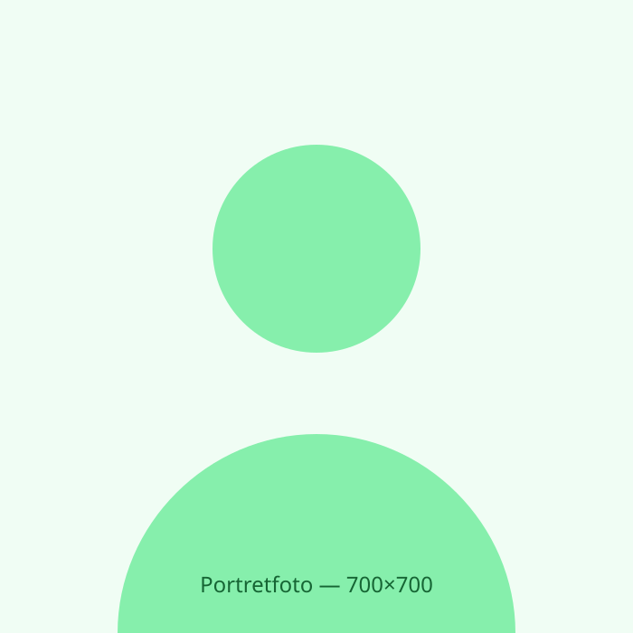

Tools
- Figma
- Adobe XD
- Miro
- Webflow
- Framer
Ontwerper in opleiding, onderzoeker uit nieuwsgierigheid.

Hoi, ik ben Jacob Arie. Ik studeer UX Design aan de Hogeschool Windesheim in Zwolle. Mijn interesse ligt in het begrijpen van gebruikers en het ontwerpen van digitale producten die logisch en toegankelijk zijn.
Naast het ontwerpen van schermen ben ik vooral geïnteresseerd in het waarom achter menselijk gedrag. Mijn achtergrond helpt me om niet alleen mooie, maar ook logische interfaces te bouwen. Als ik niet aan het ontwerpen ben, vind je me waarschijnlijk in de bouldergym of ben ik een nieuwe koffietent aan het ontdekken in de stad.
UX Design, Hogeschool Windesheim Zwolle.
Basis van ICT
Object-Oriented Software Design & Development • User Interaction
UX Research & Innovation • Vrije ruimte
Vrije ruimte • Afstudeerproject